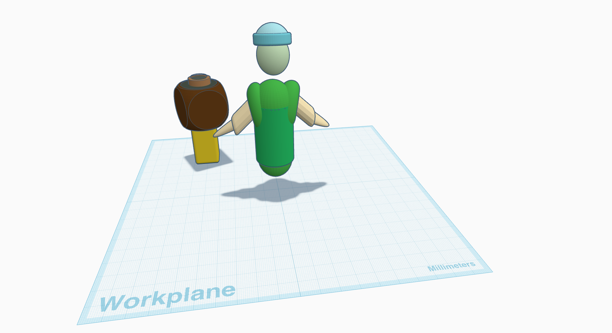
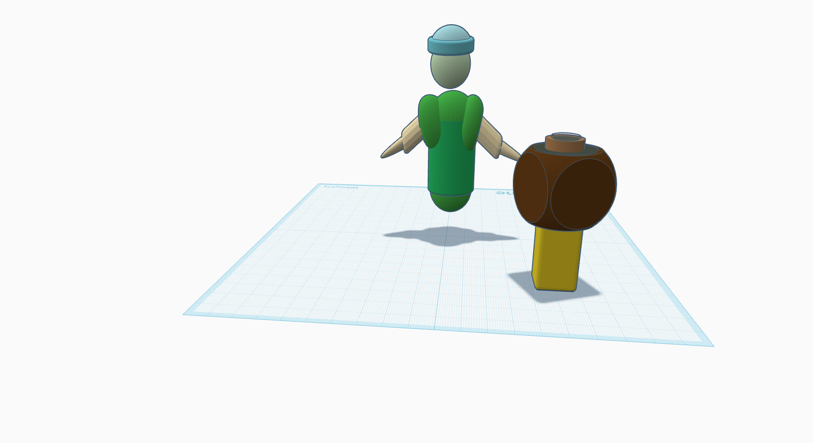
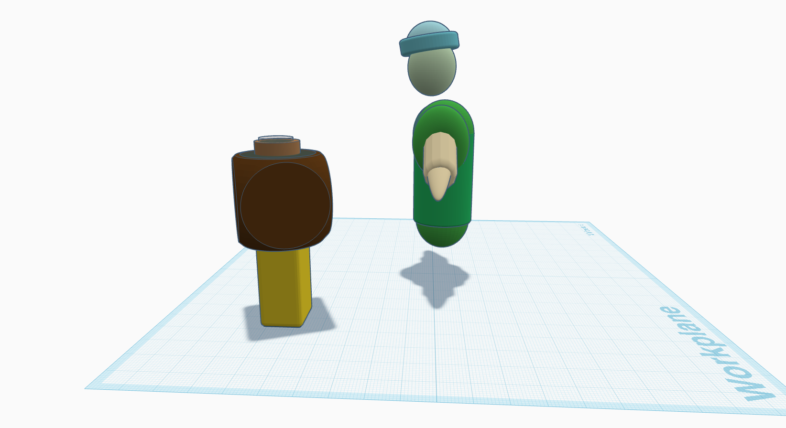
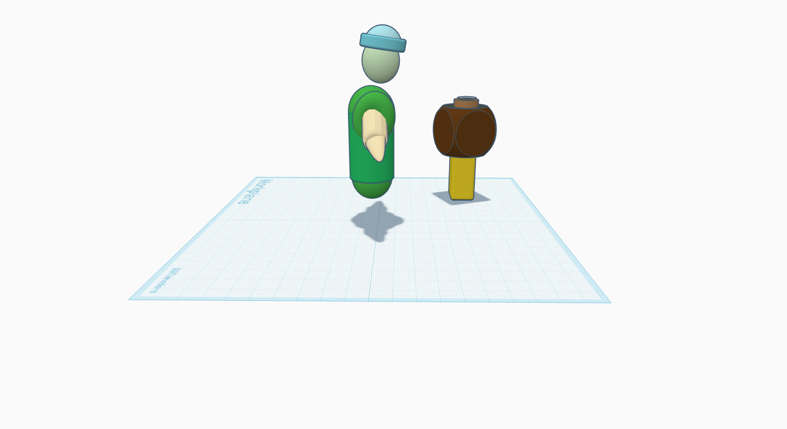

3d Project
Made by Journey Crittendon




I wanted to experiment with the program, so I made something pretty simple, a human-like figure facing a block filled with what could be water. I’ve been wanting to make a “logo” for myself for a while and I thought it would be fun to do in a 3D format, to see if I’d like it and want to further develop it. So the human figure is loosely modeled after how I'd want my logo to look. The intended use was to animate it at first, but then I realized that it might not be my strong suit so I settled for using it as an image that I could use in poster/postcard format. Eventually, I’d like to animate it! I like organic shapes more than hard angles, so I tried to lean into that a bit more while doing this project. I knew that I wanted the viewer to see that the character was human-like, so I tried to make proportionate limbs that were easy to reconize. I also wanted there to be clothes involved so I found a way to make cool looking sleeves and a fun style of hat that's popular to a lot of people these days. The most challenging part for me was figuring out what shapes to use and how I could manipulate them using this software. Also, the software was a little bit hard to navigate when it came to the way it let you control the camera angles, but it was more than do-able!
Made with Tinkercad.